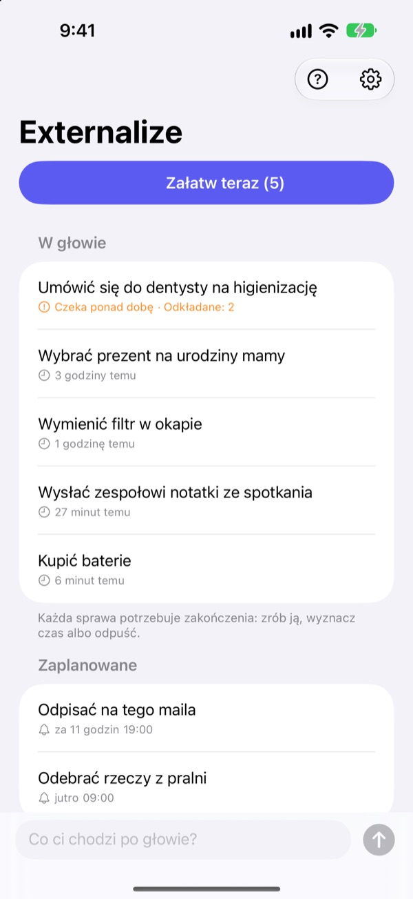
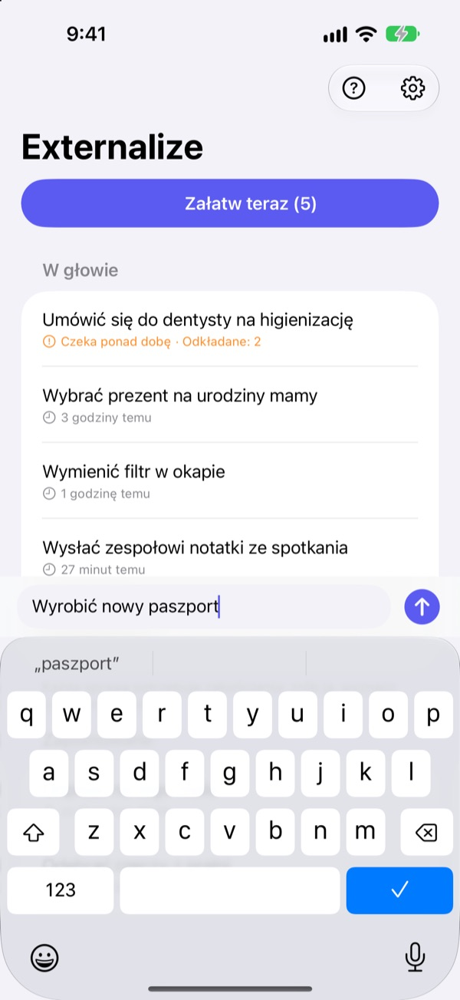
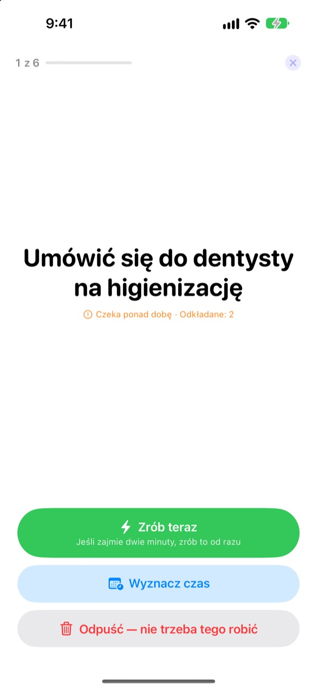
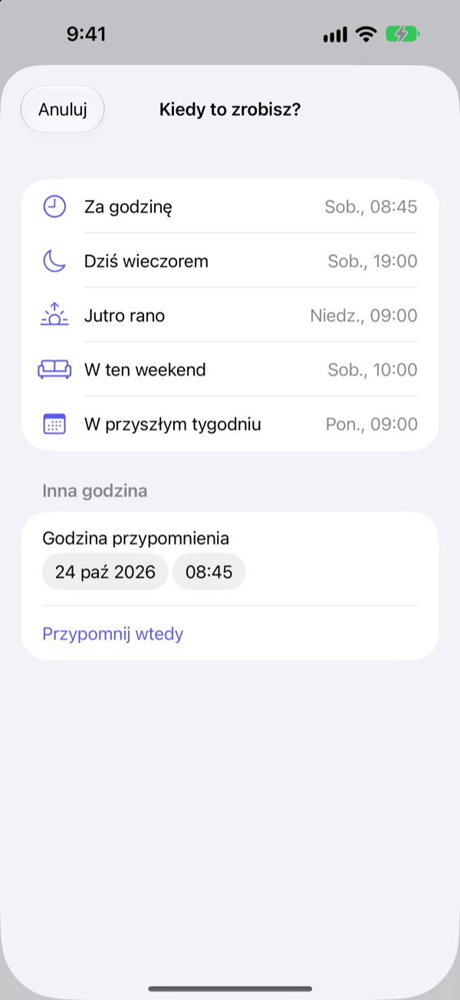

Zapisz teraz.
Załatw wieczorem.
„A, no tak, muszę…” Wyrzuć to z głowy kilkoma słowami i przestań o tym myśleć. Wieczorem załatw to, co zostało, po kolei.
Wszystkie funkcje są bezpłatne. Bez konta i logowania.

Wypróbuj tutaj
Wpisz coś, co chodzi ci po głowie, albo stuknij przykład. Potem naciśnij „Załatw teraz” i daj każdej sprawie zakończenie.
Nawet drobiazgi zajmują miejsce w głowie
Pod prysznicem, na czerwonym świetle, tuż przed zaśnięciem: „Muszę to zrobić”. Nie masz gdzie zapisać, więc trzymasz to w pamięci, a to, czym się zajmujesz, na tym cierpi. Aplikacje do zadań każą najpierw założyć listę i ustawić termin, więc samo zapisanie staje się zadaniem.
Trzy sekundy i z głowy
Otwórz aplikację i pisz w wierszu na dole. Bez list, folderów i terminów.
Stuknij widżet na ekranie blokady, a aplikacja otworzy się z pustym wierszem. Powiedz Siri Zapamiętaj w Externalize albo przypisz to do przycisku czynności, a zapisze się bez otwierania aplikacji.

Wieczorem po kolei
Jeśli coś zostało, dostaniesz jedno przypomnienie o 21:00. Jeśli nic, nic nie przyjdzie.
Po rozpoczęciu sprawy pojawiają się pojedynczo, dużym tekstem. Wybierz „Zrób teraz”, „Wyznacz czas” albo „Odpuść” i pojawia się następna. Jeśli to dwie minuty, włącz minutnik i zrób to od razu.

Nic nie zalega
Wybierz „Za godzinę”, „Dziś wieczorem”, „Jutro rano”, „W ten weekend” albo „W przyszłym tygodniu”, a sprawa wróci wtedy. W powiadomieniu od razu stukniesz „Zrobione”, „Jutro rano” albo „Odpuść”.
To, co czeka ponad dobę, i to, co ciągle odkładasz, jest oznaczone, więc widać, co ci wciąż umyka.

Zacznij w trzech krokach
- 1
Zapisz
Kilka słów w aplikacji, w widżecie na ekranie blokady albo przez Siri, co masz pod ręką.
- 2
Zezwól na powiadomienia
Aplikacja zapyta raz, przy pierwszym zapisie. Służą do wieczornego przypomnienia i wyznaczonych godzin.
- 3
Załatw wieczorem
Stuknij przypomnienie albo „Załatw teraz” i daj każdej sprawie zakończenie.
Prosto z listy
- Stuknij sprawę
- wybierz „Zrobione”, „Wyznacz czas” albo „Odpuść”
- Przesuń w prawo
- Zrobione (znika z listy)
- Przesuń w lewo
- Odpuść albo „Odłóż”, żeby wyznaczyć czas
- Załatw teraz
- przejdź po kolei przez to, co zostało
- Zapamiętaj w Externalize
- powiedz Siri bez otwierania aplikacji
- Ustawienia ▸ Wieczorne przypomnienie
- zmień godzinę albo wyłącz
Przy wyznaczaniu czasu „Dziś wieczorem” to 19:00, „Jutro rano” 9:00, „W ten weekend” sobota 10:00, a „W przyszłym tygodniu” poniedziałek 9:00. Możesz też wybrać dowolną datę i godzinę.
Częste pytania
Czy mogę coś zapisać bez otwierania aplikacji?
Tak. Powiedz Siri Zapamiętaj w Externalize, a zapyta, co zapisać, i to zachowa. Przypisz skrót „Zapisz” do przycisku czynności w Ustawieniach i wystarczy jedno naciśnięcie.
Jak dodać widżet na ekran blokady?
Dotknij i przytrzymaj ekran blokady, stuknij Dostosuj i wybierz ekran blokady, stuknij obszar widżetów i dodaj Externalize. Stuknięcie otwiera pusty wiersz, a widżet pokazuje, ile spraw zostało. Na ekran początkowy jest też mały widżet.
Czy mogę zmienić lub wyłączyć wieczorne przypomnienie?
Stuknij koło zębate w prawym górnym rogu ▸ Wieczorne przypomnienie, żeby zmienić godzinę albo je wyłączyć. Domyślnie to 21:00, a w dni, gdy nic nie zostało, milczy.
Nie dostaję powiadomień.
Jeśli ustawienia Externalize pokazują, że powiadomienia są wyłączone, stuknij tam przycisk i włącz je w Ustawieniach iPhone’a. W dni, gdy nic nie zostało, wieczorne przypomnienie nie przychodzi i to normalne.
Jak wraca sprawa z wyznaczonym czasem?
O wybranej porze przychodzi powiadomienie. Przytrzymaj je, żeby od razu wybrać „Zrobione”, „Jutro rano” albo „Odpuść”. Jeśli nic nie zrobisz, wróci do „W głowie” i załatwisz ją następnym razem.
Czy da się przywrócić sprawę oznaczoną jako zrobiona lub odpuszczoną?
Nie. Załatwione sprawy znikają z listy i nie ma archiwum. Jeśli nie masz pewności, lepiej wyznacz czas, niż odpuszczać.
Czy zapiski przejdą na nowego iPhone’a?
Nie. Wszystko zostaje tylko na tym urządzeniu i nigdy nie trafia do iCloud ani na serwer. Usunięcie aplikacji usuwa też zapiski.
Na jakich urządzeniach działa?
Na iPhonie z iOS 17 lub nowszym.
Pytanie albo błąd? Napisz na mizzking75@gmail.com. Podaj model iPhone’a i wersję iOS, a sprawdzimy to szybciej.